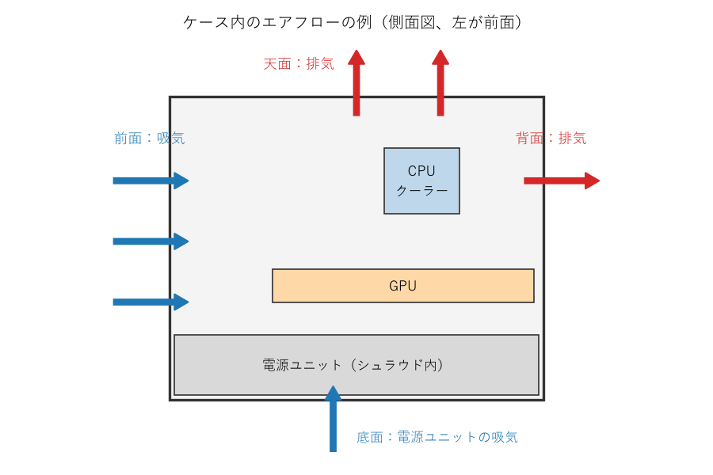

5. 組み立て手順
本章では、組み立ての手順を順に説明する。各パーツの細かな取り付け方は製品によって異なるため、本章の説明と併せて各パーツのマニュアルを参照すること。
5.1. 作業の流れ
組み立ての流れを次の図に示す。CPU、メモリ、M.2 SSD は、マザーボードをケースに入れる前に取り付けると作業しやすい。
図 5.1 組み立ての流れ
各手順の説明にある「よくある失敗」は、初めての組み立てで起こりやすい失敗である。作業の前に目を通しておくこと。
5.2. ケース外での動作確認（任意）
ケースに組み込む前に、マザーボードの箱の上で最小構成を組み、起動するかを確認する方法がある。最小構成とは、CPU、メモリ、CPU クーラー、電源ユニット、マザーボードの組み合わせである。CPU に内蔵 GPU が無い場合は GPU も加える。
この確認は必須ではないが、パーツの初期不良をケースに組み込む前に発見できる。ケースに組み込んだ後に問題が見つかると、原因の切り分けのために分解する手間がかかる。
起動するには、マザーボードのフロントパネル用のピンのうち、電源スイッチの 2 本のピンをドライバーの先端で一瞬だけ短絡させる。マザーボードに電源ボタンがある場合は、そのボタンを押す。UEFI の画面が表示されれば確認は完了である。確認後は電源ユニットのスイッチを切り、電源ケーブルを抜いてから作業を続ける。
5.3. CPU を取り付ける
ソケットのレバーを押し下げて横に外し、持ち上げる。
ロードプレート（CPU を押さえる金属の枠）を開ける。
CPU の角にある三角形の印と、ソケットの印を合わせる。CPU の側面の切り欠きとソケットの突起の位置も一致させる。
CPU を真上からそっと置く。押し込んだり、滑らせたりしない。
ロードプレートを閉じ、レバーを元の位置に戻して固定する。
レバーを戻すときには、ある程度の力が必要となる。正しく置かれていれば問題ない。製品によっては、レバーを戻すと保護カバーが自動的に外れる。外れた保護カバーは、修理を依頼する際に必要となることがあるため保管しておく。
警告
よくある失敗
CPU を斜めに置く、または落とす：ソケットのピンが曲がる。ピンが曲がったマザーボードはメーカーの保証を受けられないことが多い。
印の向きを確認しない：向きが合っていなければ CPU は収まらない。無理に押さえつけないこと。
5.4. メモリを取り付ける
事前に確認した推奨スロットを選ぶ。
スロットのラッチ（留め具）を開く。片側だけにラッチがあるマザーボードもある。
メモリの切り欠きとスロットの突起の位置を合わせる。
メモリの両端を均等に、真上から押し込む。ラッチが閉じて「カチッ」と音がするまで押す。
メモリの取り付けには、思ったより強い力が必要となる。片側だけが浮いていると起動しない原因となるため、両端のラッチが閉じていることを目で確認する。
警告
よくある失敗
推奨スロット以外に挿す：起動しない、またはデュアルチャネルで動作しない。
挿し込みが不十分：起動しない。初回起動時のトラブルの原因として最も多いものの 1 つである。
5.5. M.2 SSD を取り付ける
M.2 スロットにヒートシンクが付いている場合は外す。
ヒートシンクの裏面にある熱伝導パッドの保護フィルムを剥がす。
SSD を 30 度程度の角度でスロットに挿し込む。
SSD を基板と平行になるまで倒し、ネジまたは留め具で固定する。
ヒートシンクを取り付ける。
警告
よくある失敗
熱伝導パッドの保護フィルムを剥がし忘れる：SSD が十分に冷却されず、高負荷時に速度が低下する。
固定用のネジやスタンドオフを紛失する：小さいため、取り外したら小皿に入れておく。
5.6. CPU クーラーを取り付ける
CPU クーラーの取り付け方は製品によって大きく異なる。必ず CPU クーラーのマニュアルに従うこと。ここでは共通する要点を説明する。
マザーボードの裏側にバックプレートが必要な場合は、先に取り付ける。
CPU クーラーの底面（CPU と接する面）に保護フィルムが貼られていれば剥がす。
CPU の表面中央に、サーマルグリスを米粒から小豆程度の大きさで置く。CPU クーラーに塗布済みの場合は不要である。
CPU クーラーを真上から載せ、ネジを対角線の順に少しずつ締める。
CPU クーラーのファンのケーブルを、マザーボードの CPU_FAN コネクタに接続する。
サーマルグリスは、塗り広げなくてもよい。CPU クーラーを載せて締め付ける圧力で広がる。量が多すぎても少なすぎても冷却性能が下がるが、多少の差であれば大きな問題にはならない。
簡易水冷の場合は、ラジエーターをケースに取り付けてから、ポンプ部分を CPU に取り付ける。ポンプのケーブルは、マザーボードのマニュアルの指定に従い、ポンプ用のコネクタ（AIO_PUMP などと表記される）または CPU_FAN コネクタに接続する。
大型の空冷 CPU クーラーは、マザーボードをケースに取り付けた後のほうが作業しやすい場合がある。また、メモリのスロットを覆う形状の CPU クーラーは、先にメモリを取り付けておく必要がある。
警告
よくある失敗
CPU クーラーの底面の保護フィルムを剥がし忘れる：CPU が冷えず、すぐに高温になる。初心者に非常に多い失敗である。
ネジを 1 本ずつ最後まで締める：CPU クーラーが傾き、CPU との接触が不均一になる。
ファンのケーブルを接続し忘れる：CPU が高温になる。マザーボードによっては、CPU_FAN に何も接続されていないと警告を出して起動を止める。
5.7. ケースを準備する
ケースの両側のサイドパネルを外す。ガラス製のサイドパネルは、割れないよう柔らかいものの上に置く。
マザーボードの背面の入出力端子用のパネル（I/O パネル）が別になっている場合は、ケースの背面に内側からはめ込む。最近のマザーボードは I/O パネルが一体になっていることが多い。
ケースのスタンドオフ（マザーボードを浮かせて固定するための台座）の位置が、マザーボードのネジ穴と一致しているかを確認する。
警告
よくある失敗
マザーボードのネジ穴が無い位置にスタンドオフが残っている：マザーボードの裏面と接触して短絡し、起動しない原因や故障の原因となる。不要なスタンドオフは外す。
5.8. マザーボードをケースに取り付ける
マザーボードを斜めに入れ、背面の入出力端子を I/O パネルの穴に合わせる。
マザーボードをスタンドオフの上に置き、ネジ穴の位置を合わせる。
全てのネジを軽く仮締めしてから、本締めする。
ネジは締めすぎないこと。基板が歪んだり、損傷したりするおそれがある。軽く抵抗を感じたところで止めれば十分である。
5.9. 電源ユニットを取り付けて配線する
電源ユニットのファンの向きを決める。ケースの底面に吸気口とフィルターがある場合は、ファンを下に向けて取り付ける。
電源ユニットをケースの背面からネジで固定する。
各パーツへケーブルを接続する。
接続するケーブルを次の表に示す。
ケーブル |
接続先 |
注意点 |
|---|---|---|
ATX 24 ピン |
マザーボード |
太く硬いため、奥まで確実に挿し込む。 |
CPU 補助電源（EPS 8 ピン） |
マザーボードの上端付近 |
形状が似た PCIe 8 ピンとは互換性が無い。ケーブルの「CPU」の表記を確認する。 |
PCIe 8 ピン、または 12V-2x6 |
GPU |
GPU の取り付け時に接続する。 |
SATA 電源 |
SATA SSD、HDD、一部のファンハブ |
必要な場合のみ接続する。 |
マザーボードの上端の CPU 補助電源のコネクタは、マザーボードをケースに取り付けた後では手が届きにくい。ケーブルを先に通しておくか、マザーボードを取り付ける前に接続しておくとよい。
危険
モジュラー式の電源ユニットのケーブルは、同じ製品に付属したものだけを使うこと。電源ユニット側のコネクタのピン配置はメーカーや製品によって異なる。形状が同じでも、他の製品のケーブルを使うとパーツが故障するおそれがある。
5.10. フロントパネルとファンを配線する
ケースの前面のスイッチ、LED、端子からのケーブルを、マザーボードのコネクタに接続する。
ケーブル |
接続先 |
注意点 |
|---|---|---|
POWER SW（電源スイッチ） |
フロントパネルのピン |
極性は無い。 |
RESET SW（リセットスイッチ） |
フロントパネルのピン |
極性は無い。 |
POWER LED、HDD LED |
フロントパネルのピン |
極性がある。+ と - を確認する。 |
USB 3.x（19 ピン） |
マザーボードの USB 3.x 用コネクタ |
ピンが曲がりやすい。向きを確認して、まっすぐ挿す。 |
USB Type-C |
マザーボードの USB Type-C 用コネクタ |
マザーボード側にコネクタが無ければ、前面の USB Type-C 端子は使えない。 |
HD AUDIO |
マザーボードのオーディオ用コネクタ |
前面のイヤホン端子とマイク端子に使う。 |
ケースファン |
マザーボードのファン用コネクタ（SYS_FAN、CHA_FAN など） |
4 ピンのファンは回転数を細かく制御できる。数が足りない場合は分岐ケーブルやファンハブを使う。 |
フロントパネルのピンは小さく、表記も読みにくい。ライトで照らし、マザーボードのマニュアルの配置図と照らし合わせながら接続する。LED の極性を間違えても故障はしないが、点灯しない。
5.11. GPU を取り付ける
GPU を取り付ける位置のケースの拡張スロットカバーを外す。GPU の厚みに応じて 2 枚から 3 枚外す。
マザーボードの一番上の PCIe x16 スロットのラッチを開く。このスロットは CPU に直結しており、最も帯域が広いことが多い。
GPU をスロットに真上から挿し込み、ラッチが閉じるまで押す。
GPU のブラケットをケースにネジで固定する。
補助電源のケーブルを接続する。
12V-2x6 のコネクタは、奥まで確実に挿し込む。挿し込みが不十分だと接触部が発熱し、コネクタが溶ける事故につながるおそれがある。ケーブルをコネクタの根元で急に曲げることも避ける。
大型で重い GPU は、時間とともに自重で傾くことがある。GPU に支え（サポートステイ）が付属している場合や、ケースに支える仕組みがある場合は使用する。
警告
よくある失敗
補助電源を接続し忘れる：画面が映らない、または GPU が警告を出す。
補助電源のコネクタの数が足りない分を、1 本のケーブルの分岐で済ませる：GPU のメーカーが 1 本ずつの接続を推奨している場合は従う。
5.12. エアフローとケーブルの整理
ケース内の空気の流れ（エアフロー）は、前面または底面から吸気し、背面または天面から排気するのが基本である。暖かい空気は上に昇るため、この向きにすると効率よく熱を逃がせる。エアフローの例を次の図に示す。


図 5.2 エアフローの例
ファンには風の向きを示す矢印が刻印されていることが多い。刻印が無い場合、一般に、ファンを固定する枠（フレーム）の支柱が見える側から風が出る。
吸気の量が排気の量より多い状態（正圧）にすると、ケースの隙間からホコリが入りにくくなる。吸気側にはフィルターを付ける。
ケーブルは、できるだけマザーボードの裏側の空間を通して整理する。ケーブルの整理は見た目だけでなく、空気の流れを妨げないためと、ファンへの巻き込みを防ぐために行う。
5.13. 最終確認
サイドパネルを閉じる前に、次の項目を確認する。チェックリストは チェックリスト にもまとめている。
全ての電源ケーブルが奥まで挿し込まれている（ATX 24 ピン、CPU 補助電源、GPU 補助電源）。
CPU クーラーのファン（簡易水冷の場合はポンプも）がマザーボードに接続されている。
メモリの両端のラッチが閉じている。
ケーブルがファンに接触していない。
ケース内にネジや工具が残っていない。